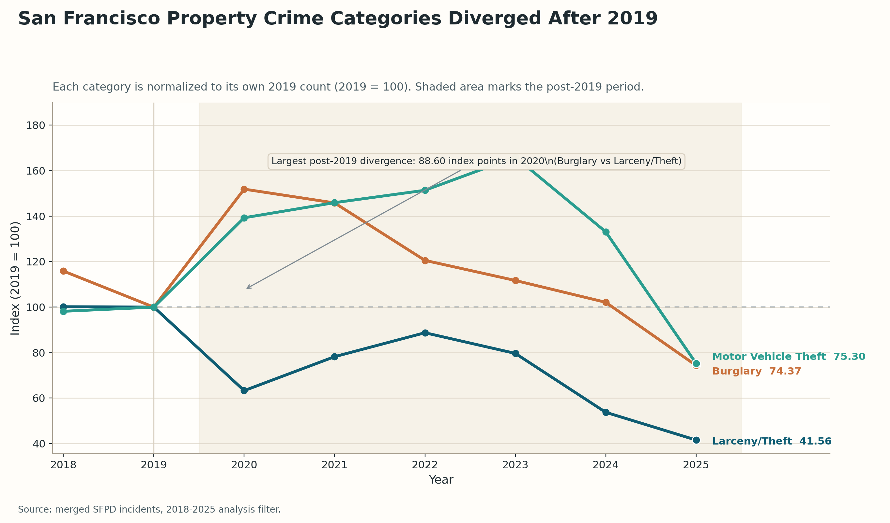

Analyzing Shifts in San Francisco Property Crime (2018-2025)
This story uses more than 500,000 filtered SFPD incident records from 2018 to 2025. We focus on three property-crime categories: Larceny/Theft, Burglary, and Motor Vehicle Theft. Our main question is simple: did these categories change in the same way after 2019, and did the geography of larceny also move across police districts?
Key Metrics at a Glance
- Total selected property crime (2019 to 2025): 76,695 to 41,577, a drop of 45.8%
- Larceny/Theft (2019 to 2025): -58.4%
- Burglary (2019 to 2020): +51.9%
- Motor Vehicle Theft peak: index 165.98 in 2023
- Largest larceny share shifts (2019 to 2025): SOUTHERN (+6.03 pp), CENTRAL (-6.03 pp)
Scope and boundaries
We built all counts from merged SFPD incident records. We keep only full years from 2018 to 2025. We also limit district analysis to the 10 official SFPD districts, and in this story, "property crime" means only Larceny/Theft, Burglary, and Motor Vehicle Theft.
This scope is important because the public SFPD incident dataset is designed to help people study incidents that were reported to or reported by the police. DataSF also says these incident reports are not the official count of crime. That is why we describe patterns in recorded incidents, not the full reality of crime in the city.
1. Property-crime categories moved apart after 2019
The first result is that the three categories did not move together. If we only look at the combined total, selected property crime fell from 76,695 incidents in 2019 to 41,577 in 2025. But that single number hides very different paths.
Larceny/Theft dropped fast. Its index fell to 63.28 in 2020 and reached 41.56 by 2025. Burglary moved in the opposite direction at first, rising to 151.88 in 2020. Motor Vehicle Theft stayed high for longer and reached its peak in 2023 at 165.98.
This break starts in 2020, the same period when the Bay Area stay-at-home order changed daily movement across the region. That timing gives useful context for the story, but our chart is still descriptive. It shows that the categories diverged. It does not prove that one event alone caused every change.
We then focus on larceny for the spatial part of the story because it has much higher volume than the other two categories. In 2019, the dataset has 46,754 larceny incidents, compared with 5,692 burglary incidents and 5,288 motor vehicle theft incidents. A higher-volume category gives a cleaner district-level signal.

2. The geography of larceny also changed
In the second part, we stop looking at raw counts and switch to district share. District share means the percentage of all citywide larceny that happened in one district. This helps us study geography without mixing it up with the overall citywide drop.
The biggest shift is between CENTRAL and SOUTHERN. In 2019, CENTRAL held 21.0% of citywide larceny, while SOUTHERN held 11.1%. By 2025, this order had flipped. SOUTHERN rose to 17.1%, while CENTRAL fell to 14.9%.
This does not mean SOUTHERN had more larceny in absolute terms than before. In fact, SOUTHERN still fell from 5,122 incidents in 2019 to 3,261 in 2025. Its share went up because it shrank more slowly than the city as a whole. This is the key difference between count and share, and it is one of the most important points in our analysis.
The change is not only about two districts. The largest share gains came from SOUTHERN (+6.03 percentage points), TARAVAL (+2.77 pp), and MISSION (+1.88 pp). The largest share losses came from CENTRAL (-6.03 pp), NORTHERN (-3.14 pp), and RICHMOND (-2.56 pp).
Outside context also helps here. San Francisco's office vacancy series says the city has not returned to its 2019 low since the COVID period. We use that only as background for why downtown patterns may have stayed unusual for several years. The map itself still shows only recorded larceny share, nothing more.
3. The monthly view shows a lasting shift
Endpoint comparisons are useful, but they do not show how the change happened. Figure 3 uses monthly district shares of citywide larceny. This is important because the values here are not the same as the full-year 2025 shares in Section 2. Section 2 uses annual shares. Figure 3 shows month-by-month movement.
To study the first shock period, we compare each district's average monthly share in 2020 and 2021 with its own 2019 monthly average. The largest average changes are CENTRAL (-2.19 pp), INGLESIDE (+2.11 pp), and TENDERLOIN (-2.04 pp). These are average differences across many months, not one unusual month.
That matters because it suggests the shift was not just a short lockdown dip. The pattern stayed visible over a longer period. We still keep the language careful here. The monthly plot supports the idea of a lasting redistribution in recorded larceny, but it does not prove a single mechanism behind it.
Conclusion
Looking across all three views, we reach three main conclusions. First, the three property-crime categories clearly diverged after 2019 instead of moving together. Second, the geography of larceny changed, with CENTRAL losing share and SOUTHERN gaining the most. Third, the monthly chart shows that this was not only a two endpoint story. The shift stayed visible across many months.
References & Resources
- Assignments and Week 8 framing: socialdata2026 wiki.
- Narrative visualization framing: Segel & Heer, Narrative Visualization: Telling Stories with Data.
- Primary data portal: DataSF, Police Department Incident Reports: 2018 to Present.
- Dataset scope and limitations: DataSF Dataset Explainers, SFPD Incident Report: 2018 to Present.
- Critical discussion of policing data: Richardson, Schultz, and Crawford, Dirty Data, Bad Predictions.
- Pandemic timing context: Bay Area jurisdictions, March 16, 2020 stay-at-home announcement.
- Downtown activity context: City and County of San Francisco, Office Vacancy Rate.
- Responsible interpretation of crime statistics: FBI, UCR Statistics: Their Proper Use.